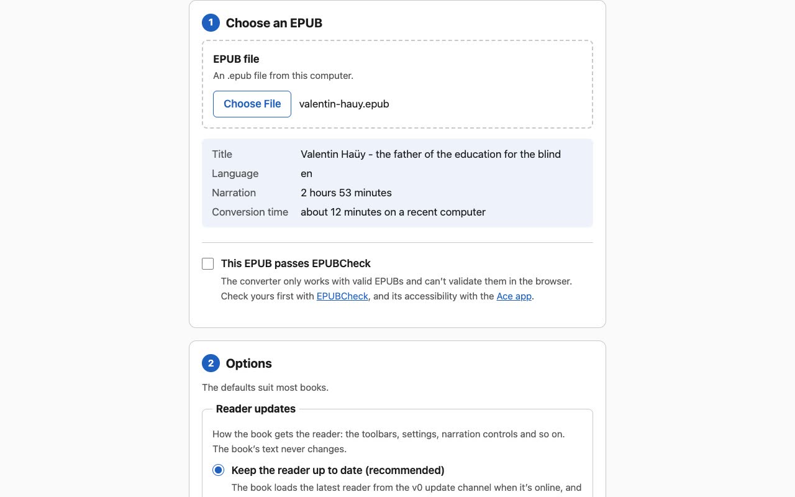
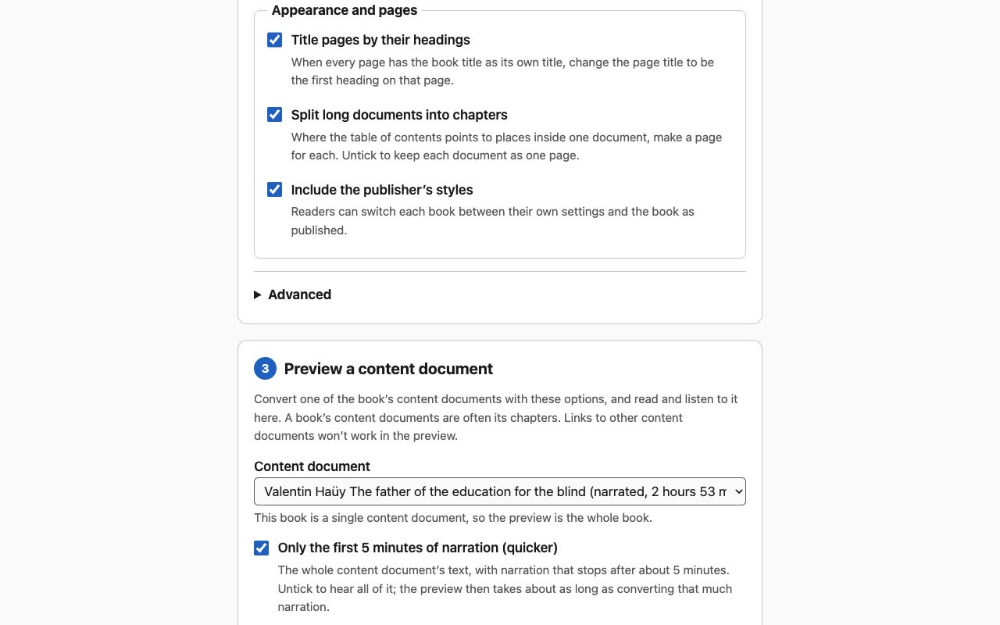
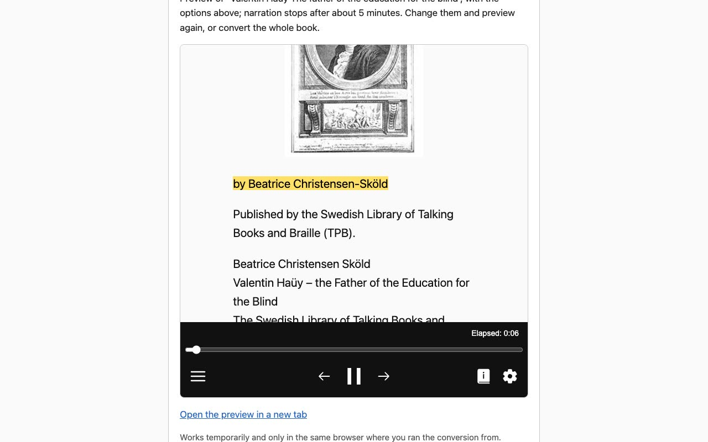
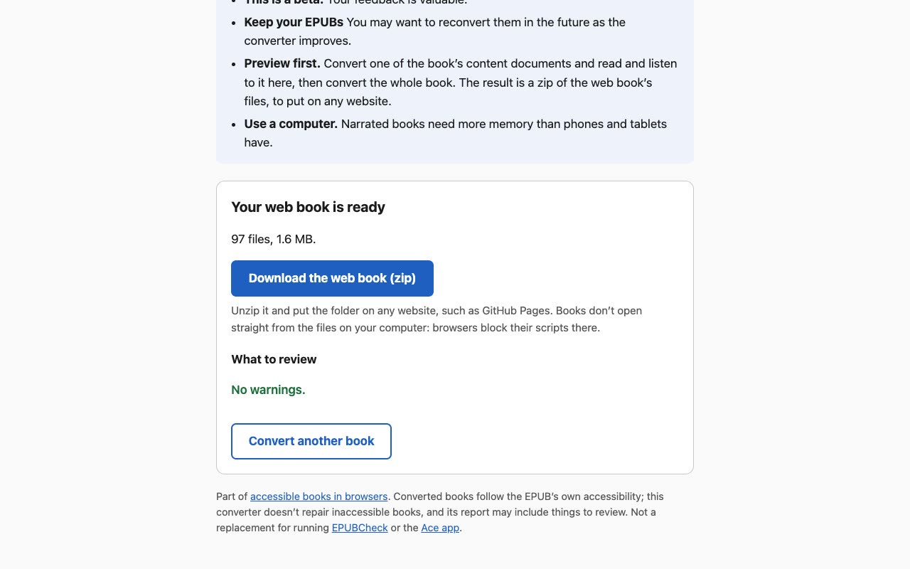

-
Choose an EPUB
Choose an EPUB, and the converter shows its title, language, how much narration it has and about how long converting will take.

Watch the clip -
Options
The options start at defaults that suit most books, from reader updates to narration cleanup and page layout.

Watch the clip -
Preview a content document
Preview one content document first, converted and shown right on the page, narration included.

Watch the clip -
Convert the whole book
Convert the whole book and download it as a zip of files to put on any website.

Watch the clip